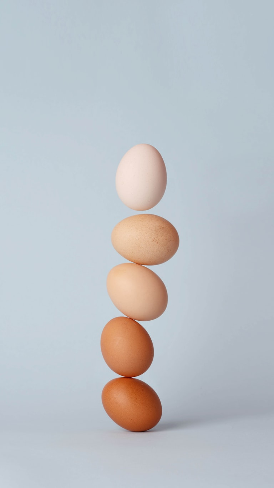

The table
The kitchen.
One long table, one sitting, and a menu written the same afternoon from what the boats and the garden brought in.

How we cook
Nothing is on the menu until it has come through the door.
The kitchen is the warm end of the house and the door to it is never shut. We cook plainly, in the way the coast has always cooked: fish the day it is landed, vegetables the day they are pulled, bread every morning, and a pudding because somebody always asks.
Guests are welcome at the counter with a glass while dinner comes together. If you would rather eat out, we will point you to the places we go ourselves.
A late-summer evening
Ask for dinnerTo begin
Brown bread, still warm
Salted butter from the farm at the top of the lane. Cold radishes from the garden.
Crab, dressed at the table
From the morning boat, with lemon, a little mayonnaise, and toast.
From the water
Whole fish over the fire
Whatever was landed: usually bass or bream, cooked with fennel from the garden and finished with green oil.
Mussels in cider
Gathered at low tide, opened in dry cider with bay, shallot and a spoon of cream.
From the land
Slow lamb shoulder
From the hill farm, cooked since lunchtime with rosemary, garlic and a glass of white.
A dish for the vegetable eaters
Usually what the garden has most of that week, cooked with as much care as the lamb. Tell us and we will make it the centre of the table.
From the garden
Leaves, herbs and flowers
Picked an hour before dinner and dressed with nothing more than oil, salt and a squeeze of something sharp.
New potatoes with mint
Dug the same day, boiled, buttered, and left in the middle of the table.
To finish
Blackberry and apple crumble
Berries from the hedge on the shore path, apples from the garden, and cream from the farm.
Cheese and oatcakes
Two or three from nearby, with quince from last autumn.
Breakfast, the next morning
Laid out and left for you
Bread, butter, jam from the garden, fruit, yoghurt and coffee on the stove. Eggs cooked however you like them, when you appear.
Something warm on cold days
Porridge with brown sugar, or a bacon sandwich if the walk ahead is a long one.